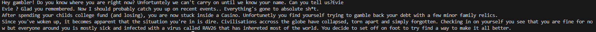

Development
Introduction
Development
Testing
| Test/Input | Expectation | Output |
|---|---|---|
| Evie | It states their name then introduces what is happening in the world they woke into. |  |
| "" | What happens? |  |
| "" | What happens? | |
Feedback
Question 1
Feedback from person 1
Feedback from person 2
Question 2
Feedback from person 1
Feedback from person 2
Improvements
Write what you changed